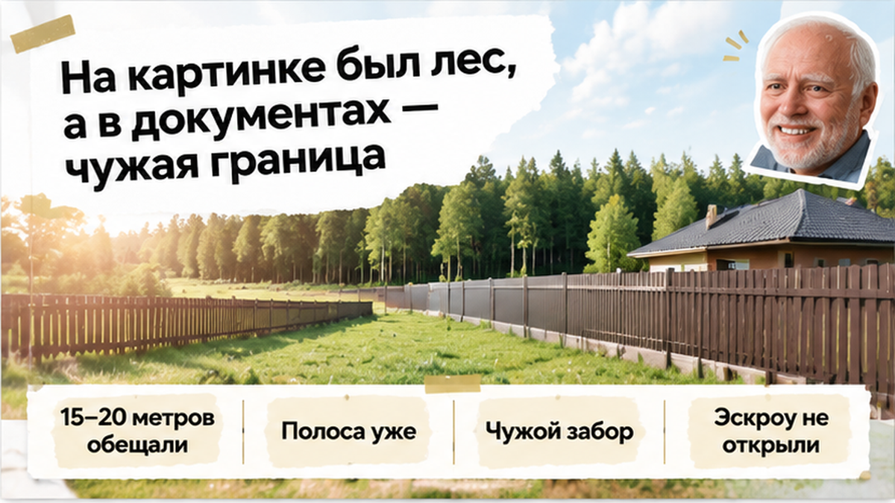
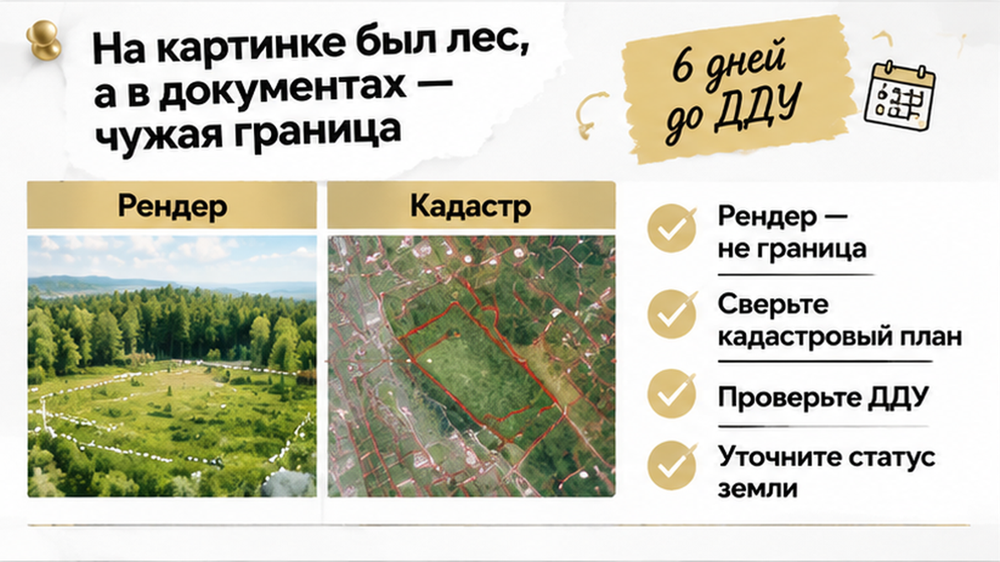
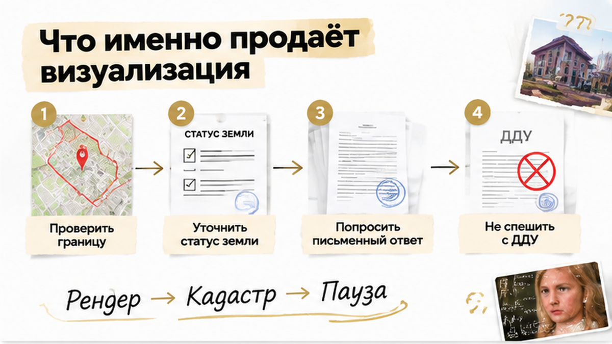
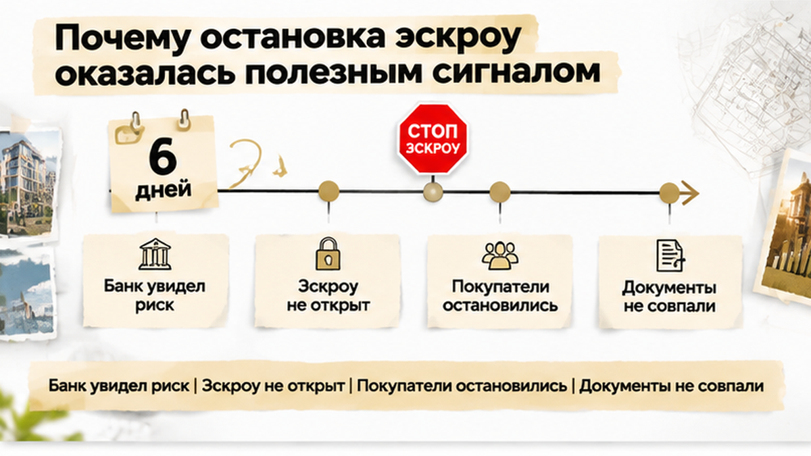
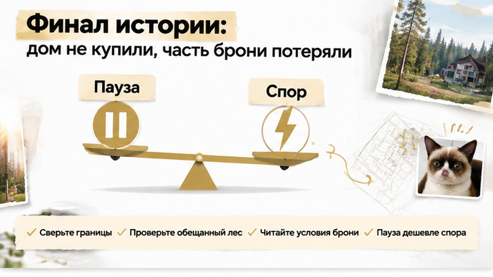

За шесть дней до подписания ДДУ семья под Тюменью узнала, что лесополоса за будущим домом на кадастровой схеме сужается до нескольких метров, хотя в офисе обещали 15–20 метров зелёного буфера. По границе уже стоял чужой забор, банк отказался открывать эскроу до выяснения статуса земли, и покупатели потеряли 70 000 рублей из 220 000 рублей бронирования. До этого родители уже видели во дворе детей и деревья на визуализации, а менеджер уверенно показывал «лес за участком». На схеме не оказалось закреплённой зоны отдыха посёлка — только узкая полоса и линия соседского забора. Семья остановилась до подписания, но выйти без потерь не вышло: часть брони удержали по условиям соглашения. Если вы выбираете дом в коттеджном посёлке под Тюменью, границы участка стоит сверить до внесения денег, а не в последний вечер перед ДДУ.


Семья выбирала дом в строящемся коттеджном посёлке. Дом и участок должны были передаваться по ДДУ. На рекламных материалах за домом были деревья, свободное пространство и ощущение, что соседский двор не окажется сразу за забором.
В офисе продаж зелёную полосу описывали как лесополосу или буфер шириной примерно 15–20 метров. Покупатели смотрели планировку, считали площадь дома и думали, где будут играть дети.
Бронь уже внесли. До подписания ДДУ оставалось немного времени. Семья ждала решения по ипотеке.
Перелом наступил, когда ипотечный менеджер запросил кадастровый план участка и схему его расположения на кадастровом плане территории.
Это не рекламный рендер и не общий план посёлка. На такой схеме видно, где проходят границы, как стоят соседние участки и где земля заканчивается на бумаге.
За домом не оказалось закреплённой зоны отдыха посёлка. Полоса была заметно уже, чем представляли покупатели. А по линии границы уже стоял соседский забор.
Сам по себе забор ещё не доказывает, что сосед занял чужую землю. Но для семьи это был понятный сигнал: пространство за домом нельзя считать гарантированным только потому, что оно красиво показано на визуализации.
Банк не открыл эскроу до выяснения статуса полосы и возможного риска спора о границах. Покупатели решили не подписывать договор, пока не получат ясные ответы.
Из 220 000 рублей бронирования им вернули 150 000. Ещё 70 000 рублей удержали. Эскроу-счёт так и не открыли.

Рендер показывает замысел: деревья, дорожки, зелёное пространство, приятный вид из окна. Но он не устанавливает границы земельного участка.
Границы подтверждают документы на землю и сведения о координатах. Если зелёная полоса не закреплена в ДДУ, проектной декларации или отдельном договоре на благоустройство, относиться к ней как к части покупки рискованно.
Обычный покупатель видит за домом лес. При проверке нужно задать другой вопрос: где написано, что эта земля останется свободной и будет использоваться как зелёная зона?
Даже если сейчас за забором растут деревья, это не значит, что полоса навсегда останется зоной отдыха посёлка. Она может относиться к другому участку или иметь статус, который ещё предстоит выяснить.
В проектной декларации застройщик раскрывает сведения о правах на земельный участок, его кадастровом номере и площади. Для соответствующих объектов там также указываются данные о расположении домов, сетях и сроках передачи.
Документы на землю можно запросить у застройщика ещё до сделки. Это не недоверие к менеджеру и не попытка усложнить его работу. Покупатель должен понимать, что именно ему продают. Похожий разрыв между обещанием в офисе и проектной декларацией в ЕИСЖС я разбирал в материале о газе в КП, где в декларации оказалась другая дата — там тоже речь о том, что маркетинг и бумага расходятся за несколько дней до ДДУ.
Отдельный класс рисков — когда визуализация показывает «лес», а в правовом контуре участка фигурирует только узкая полоса между заборами. В квартирах в ЖК похожая механика встречается реже, но в посёлках она типична: покупатель смотрит на среду, а не на координаты. Поэтому я советую заранее попросить не только презентацию, но и выписку о границах и схему — ещё до разговора о скидке или «последнем лоте».
Если банк уже одобрил ипотеку на дом, это не отменяет земельных вопросов. Кредитор смотрит на залог и документы, и иногда именно он первым замечает несостыковку, как в истории с остановкой эскроу из‑за реквизитов или в разборе про аренду земли вместо собственности в декларации. В КП под Тюменью такие расхождения часто всплывают не на просмотре, а когда менеджер банка запрашивает пакет на эскроу.
Смотреть нужно не на один красивый план, а на несколько документов рядом.
Сначала изучают проектную декларацию: кадастровый номер участка, площадь, права на землю, расположение будущих домов и срок передачи. Потом эти сведения сравнивают с кадастровым планом и схемой расположения на кадастровом плане территории. После — с планом посёлка и будущим ДДУ.
Если менеджер говорит: «За домом всегда будет зелёная зона», важны не уверенность в голосе и не картинка на стенде. Нужен конкретный пункт договора или документ, который подтверждает обещание.
Полезно прямо спросить: чей участок находится за домом? Совпадает ли забор с кадастровой границей? Где закреплено, что эта полоса останется свободной? Кто будет её содержать?
Если ответ снова сводится к словам «там всё спокойно», проверка ещё не закончена.
Отдельно нужно прочитать соглашение о бронировании. В нём должно быть понятно, когда деньги возвращают полностью, что считается отказом покупателя и какие удержания возможны, если банк не открывает эскроу из-за вопросов к документам.
Сам факт, что до ДДУ дело не дошло, не означает автоматический возврат всей суммы. Смотрят на текст соглашения и на причину отказа. Поэтому документы лучше просить до внесения брони: тогда есть время сравнить обещание с бумагами и спокойно принять решение.
Я обычно прошу покупателя сделать простую таблицу из трёх колонок: «что сказали устно», «что в декларации», «что на схеме участка». Если в одной строке три разных ответа про «лес за домом», это повод не спорить с менеджером в коридоре, а вынести вопрос на письменный ответ застройщика. Иногда после такого запроса всплывает, что зелёная зона относится к общему имуществу посёлка, а не к вашему двору — и тогда картина меняется без суда и без эмоций.
До оплаты брони можно спокойно сверить границы и декларацию. Напишите в Telegram или MAX — разберём документы на участок до ДДУ, пока деньги ещё не ушли на эскроу.

Банк не заменяет покупателю полноценную проверку. Но его вопрос иногда появляется в самый нужный момент — пока деньги ещё не ушли дальше.
В этой истории банк увидел риск, связанный с границами и статусом полосы, и не открыл эскроу до выяснения обстоятельств. Для семьи это стало проблемой. Одновременно именно так покупатели получили возможность не подписывать договор вслепую.
Не каждый забор означает спор. Не каждый вопрос к кадастровой схеме приведёт к отказу банка. Но если документы не складываются в ясную картину, фраза «потом разберёмся» может обойтись дорого.
После ДДУ и оплаты у покупателя меньше пространства для спокойных переговоров. Поэтому просьба банка остановиться — не всегда помеха сделке. Иногда это последний сигнал проверить её до следующего шага.
Если застройщик говорит, что схема устарела, попросите актуальные документы и письменное объяснение. Если зелёный буфер относится к благоустройству, уточните, где это закреплено и кто отвечает за его содержание.
Доверять здесь стоит не презентации, а ответу, который подтверждается бумагами.
Иногда застройщик предлагает «подписать сейчас, а границы уточним после межевания». Для семьи с детьми это звучит как компромисс, но по сути вы соглашаетесь на объект, чьи границы ещё не определены. Если лес на визуализации для вас не украшение, а причина покупки, откладывать проверку нельзя — иначе вы платите за эмоцию, а не за закреплённый двор.
В Тюменской области коттеджные посёлки часто продают как «готовую среду»: дороги, озеленение, вид из окна. Но юридически важнее, что попадёт в ваше владение по ДДУ и что останется на соседнем участке. Сосед может поставить забор по своей линии законно — и тогда ваш «лес» окажется за чужим периметром. Это не драма и не скандал, а обычная земельная механика, которую лучше увидеть до брони.

Семья не стала подписывать ДДУ, пока не получила подтверждение по земле за домом. Банк эскроу не открыл. Покупатели отказались от сделки, получили назад 150 000 рублей и потеряли 70 000 рублей из внесённых 220 000.
Это не история о том, что любой дом рядом с лесом опасен. Проблема возникла в другом: рекламный вид приняли за закреплённую часть объекта, а условия возврата брони выясняли уже тогда, когда сделка остановилась.
Если бы банк не остановил эскроу, вы бы подписали ДДУ ради сохранения дома или тоже отказались бы, даже понимая, что часть брони не вернут?
Граница, документы на землю и условия договора должны ответить на простой вопрос: что именно останется за вашим домом после покупки?
Если ответа пока нет, пауза лучше спешки. Она иногда стоит части брони, зато позволяет увидеть риск до подписания. Проверять новостройку или коттеджный посёлок лучше до того, как деньги и сроки начнут подталкивать к решению.
Я подключаюсь к проверке объектов под Тюменью до брони — в момент, когда документы ещё можно спокойно сопоставить, а условия сделки изменить или от неё отказаться.
Материал не заменяет индивидуальную юридическую консультацию.